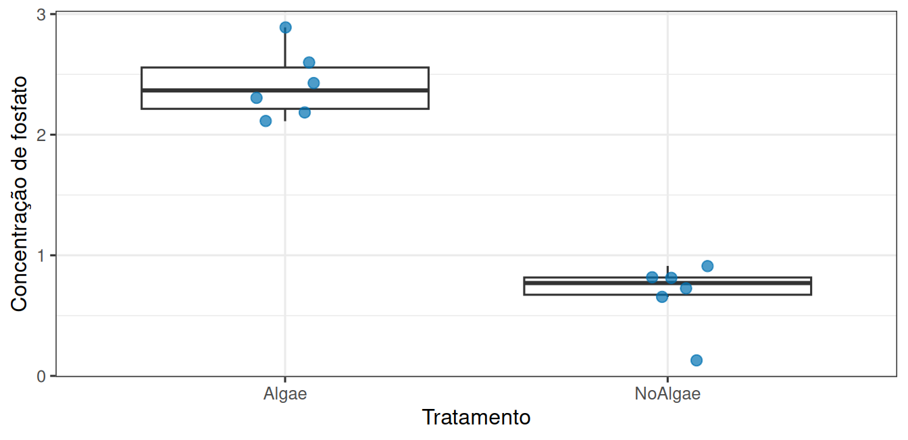
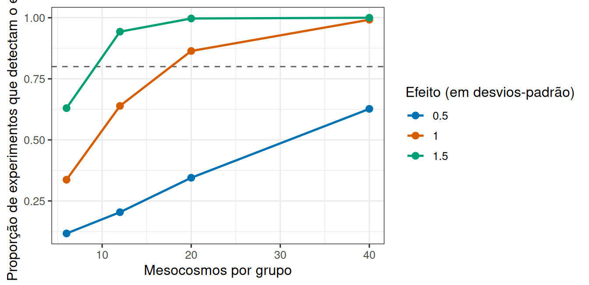

library(tidyverse)
theme_set(theme_bw(base_size = 12))As algas mudam a concentração de fosfato?
Prática em R 06
1 Um experimento em mesocosmos
Um experimento investigou como a presença de algas afeta a concentração de nutrientes na água. Tanques experimentais receberam ou não algas, e a concentração de três nutrientes foi medida em cada um.
Nesta prática comparamos dois grupos com dados reais, do começo ao fim: contar as unidades experimentais, olhar os dados, aplicar o teste, ler o intervalo de confiança e, por último, fazer a pergunta que quase ninguém faz: este experimento seria capaz de detectar um efeito, se ele existisse?
2 Vamos abrir os dados
url <- "https://raw.githubusercontent.com/FCopf/datasets/refs/heads/main/zuur-2009-data-sets/Biodiversity.txt"
biodiv <- read_tsv(url, show_col_types = FALSE)
glimpse(biodiv)Rows: 108
Columns: 7
$ MU <dbl> 1, 1, 1, 2, 2, 2, 3, 3, 3, 4, 4, 4, 5, 5, 5, 6, 6, 6, 7,…
$ Mesocosm <dbl> 1, 1, 1, 2, 2, 2, 3, 3, 3, 4, 4, 4, 5, 5, 5, 6, 6, 6, 7,…
$ Abundance <dbl> 0, 0, 0, 4, 4, 4, 8, 8, 8, 8, 8, 8, 12, 12, 12, 16, 16, …
$ Biomass <dbl> 0.0, 0.0, 0.0, 0.5, 0.5, 0.5, 1.0, 1.0, 1.0, 1.0, 1.0, 1…
$ Treatment <chr> "NoAlgae", "NoAlgae", "NoAlgae", "NoAlgae", "NoAlgae", "…
$ Nutrient <chr> "NO3", "NO3", "NO3", "NO3", "NO3", "NO3", "NO3", "NO3", …
$ Concentration <dbl> 2.490, 1.185, 3.825, 3.045, 2.190, 3.600, 2.835, 2.475, …MU identifica o mesocosmo, Treatment indica a presença de algas, Nutrient o nutriente medido e Concentration a concentração observada.
3 Quantas unidades experimentais existem?
Antes de qualquer teste, a pergunta obrigatória: quantas vezes o tratamento foi de fato aplicado?
nrow(biodiv)[1] 108n_distinct(biodiv$MU)[1] 36São 108 linhas, mas apenas 36 mesocosmos. Cada mesocosmo foi medido três vezes.
biodiv |> count(MU) |> count(n, name = "quantos_mesocosmos")# A tibble: 1 × 2
n quantos_mesocosmos
<int> <int>
1 3 36As três medidas de um mesmo mesocosmo são subamostras: descrevem bem aquele mesocosmo, mas não são repetições independentes do tratamento. A unidade experimental é o mesocosmo, e é a ele que reduzimos os dados antes de analisar.
mesocosmos <- biodiv |>
group_by(MU, Treatment, Nutrient) |>
summarise(concentracao = mean(Concentration), .groups = "drop")
mesocosmos |> count(Treatment, Nutrient)# A tibble: 6 × 3
Treatment Nutrient n
<chr> <chr> <int>
1 Algae NH4 6
2 Algae NO3 6
3 Algae PO3 6
4 NoAlgae NH4 6
5 NoAlgae NO3 6
6 NoAlgae PO3 6Trinta e seis unidades, seis em cada combinação de tratamento e nutriente.
4 Como ficam os dois grupos?
Vamos começar por um nutriente só:
fosfato <- mesocosmos |> filter(Nutrient == "PO3")
fosfato |>
group_by(Treatment) |>
summarise(
n = n(),
media = mean(concentracao),
desvio = sd(concentracao)
)# A tibble: 2 × 4
Treatment n media desvio
<chr> <int> <dbl> <dbl>
1 Algae 6 2.42 0.289
2 NoAlgae 6 0.675 0.282ggplot(fosfato, aes(x = Treatment, y = concentracao)) +
geom_boxplot(outlier.shape = NA) +
geom_jitter(width = 0.12, size = 2.5, alpha = 0.7, colour = "#0072B2") +
labs(x = "Tratamento", y = "Concentração de fosfato")
5 O teste t
Comparar duas médias é uma operação tão frequente que existe uma função pronta para ela. Em vez de simular a distribuição nula, t.test() chega ao mesmo lugar por um caminho matemático:
teste <- t.test(concentracao ~ Treatment, data = fosfato)
teste
Welch Two Sample t-test
data: concentracao by Treatment
t = 10.593, df = 9.9943, p-value = 9.393e-07
alternative hypothesis: true difference in means between group Algae and group NoAlgae is not equal to 0
95 percent confidence interval:
1.377705 2.111695
sample estimates:
mean in group Algae mean in group NoAlgae
2.4200222 0.6753222 A saída traz, em ordem: a estatística t, os graus de liberdade, o valor de p, o intervalo de confiança de 95% para a diferença entre as médias e as duas médias.
A fórmula concentracao ~ Treatment lê-se “concentração em função de tratamento”, a mesma notação que usaremos em todos os modelos daqui em diante.
teste$conf.int[1] 1.377705 2.111695
attr(,"conf.level")
[1] 0.956 Os pressupostos se sustentam?
O teste t supõe que os valores de cada grupo se distribuem de forma aproximadamente simétrica em torno da média. Com poucas unidades, o jeito mais honesto de verificar isso é olhar.
ggplot(fosfato, aes(x = concentracao)) +
geom_dotplot(binwidth = 0.1, fill = "#0072B2", colour = "white") +
facet_wrap(~ Treatment) +
labs(x = "Concentração de fosfato", y = NULL) +
scale_y_continuous(breaks = NULL)
Compare também os desvios-padrão dos dois grupos na tabela anterior. Se um for muito maior que o outro, a versão do teste que o R usa por padrão (Welch) já lida com isso: repare que os graus de liberdade não são inteiros.
7 Este experimento enxergaria um efeito?
Seis mesocosmos por grupo é pouco. Vale medir o quanto esse tamanho limita o que o experimento consegue detectar, e para isso simulamos experimentos em que o efeito existe e contamos quantas vezes ele é detectado.
O tamanho do efeito é expresso em desvios-padrão, para não depender da escala do nutriente: um efeito de 1 significa “uma diferença do tamanho da variação entre mesocosmos”.
poder_para <- function(n_por_grupo, efeito, repeticoes = 1000) {
mean(replicate(repeticoes, {
sem_algas <- rnorm(n_por_grupo, mean = 0, sd = 1)
com_algas <- rnorm(n_por_grupo, mean = efeito, sd = 1)
t.test(sem_algas, com_algas)$p.value < 0.05
}))
}
poder_para(n_por_grupo = 6, efeito = 1)[1] 0.324A função devolve a proporção de experimentos em que o efeito foi detectado. Agora vamos percorrer vários tamanhos de experimento e vários tamanhos de efeito:
cenarios <- expand_grid(
n_por_grupo = c(6, 12, 20, 40),
efeito = c(0.5, 1, 1.5)
) |>
mutate(poder = map2_dbl(n_por_grupo, efeito, poder_para))
cenarios# A tibble: 12 × 3
n_por_grupo efeito poder
<dbl> <dbl> <dbl>
1 6 0.5 0.117
2 6 1 0.337
3 6 1.5 0.63
4 12 0.5 0.204
5 12 1 0.639
6 12 1.5 0.943
7 20 0.5 0.345
8 20 1 0.864
9 20 1.5 0.997
10 40 0.5 0.627
11 40 1 0.992
12 40 1.5 1 ggplot(cenarios, aes(x = n_por_grupo, y = poder, colour = factor(efeito))) +
geom_hline(yintercept = 0.8, linetype = "dashed", colour = "grey40") +
geom_line(linewidth = 0.9) +
geom_point(size = 2.4) +
scale_colour_manual(values = c("0.5" = "#0072B2", "1" = "#D55E00", "1.5" = "#009E73")) +
labs(
x = "Mesocosmos por grupo",
y = "Proporção de experimentos que detectam o efeito",
colour = "Efeito (em desvios-padrão)"
)